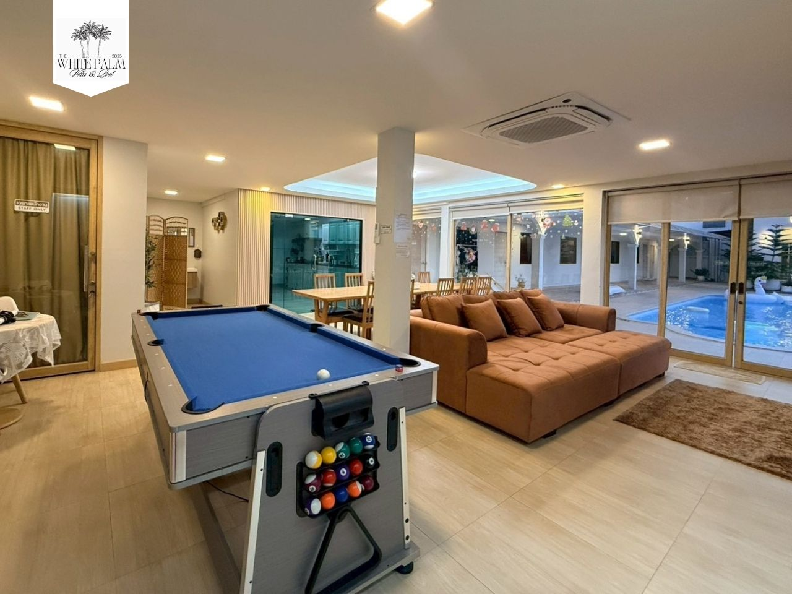

Bueng Kaen Nakhon
A large lake in central Khon Kaen used for walking, leisure and recreation. It is an easy place to slow down between meals or other city stops.
A compact Khon Kaen city guide for visitors: Bueng Kaen Nakhon, Wat Nong Waeng, Ton Tann Market, travel planning, airport tips, and a private pool villa base in town.
Khon Kaen works well for travellers who want an easy city base with short outings during the day and a relaxed evening with their own group. This guide focuses on practical city stops rather than trying to cover the whole province.
A large lake in central Khon Kaen used for walking, leisure and recreation. It is an easy place to slow down between meals or other city stops.
Phra Mahathat Kaen Nakhon, the nine-storey stupa at Wat Nong Waeng, is one of the city’s best-known landmarks and includes an upper-level viewpoint over Khon Kaen.
An evening market on Mittraphap Road with food, drinks, fashion and handmade products. It is a practical dinner-and-browse stop before heading back to your accommodation.
Breakfast, cafés or a slower start. Keep the first half of the day flexible if your group arrived late the night before.
Visit one or two city attractions rather than packing the schedule. The lake and temple can fit naturally into the same city-day theme.
Choose a market or restaurant, then return to your accommodation for pool time, games or a shared meal.

For families and friend groups, a whole-house stay can make the accommodation part of the trip. The White Palm Villa & Pool lists 5 bedrooms, 7 bathrooms, a private pool, central kitchen, living area and games facilities. The property states that Bueng Kaen Nakhon is about 3.3 km away and Khon Kaen Airport about 8.3 km away.
Availability, guest limits, pricing and house rules vary by date, so check the current details directly with the property before making plans.
Official villa details & direct booking →A car can be convenient for a group, but your best option depends on the stops you choose. Build your day around nearby clusters to reduce backtracking.
Confirm the actual bed setup, number of bathrooms, parking, check-in/check-out times, noise policy, security deposit and any extra guest charges.
Use it as a planning framework. Attraction hours, traffic and individual venue conditions can change, so check current information before travelling.
For current destination information, see the Tourism Authority of Thailand pages for Khon Kaen, Bueng Kaen Nakhon and the TAT guide to things to do in Khon Kaen.